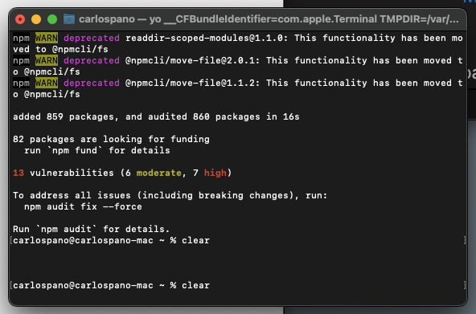

Trabajo: Creación de una extensión para Visual Studio Code
Nombre del alumno: Carlos Pano Hernández
Descripción del trabajo:
Para esta actividad, se propone realizar una extensión de Visual Studio Code, con el objetivo de practicar
la programación en Javascript (y conocer de paso TypeScript).
Dicha extensión, ejecutará n saltos de línea al contenido de cualquier archivo.
Proceso de desarrollo
- Se comenzó con la instalación de las paqueterías:
-
"Yeoman": Nos permite generar el esqueleto inicial de un proyecto web.
-
"Generator-Code": Extensión de Yeoman para la creación de "extensiones".

- Hola